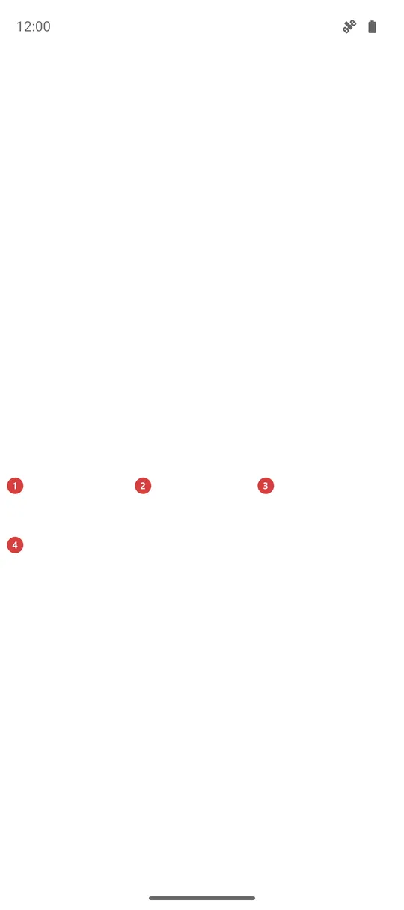

Аварійний сигнал SOS
Для чого цей екран
Сигнал SOS повторює сигнал SOS за Морзе - три короткі, три довгі, три короткі - гучною сиреною, мигтючим світлом або і тим, і тим, щоб вас почули чи побачили. Він лише видає звук і світло: нікому не телефонує й не надсилає ваше місцезнаходження.

Порядок дій
- Відкрийте «Аварійний сигнал SOS» з меню програм, із панелі програм або кнопкою «Сигнал SOS» на екрані «Турист». Після встановлення він вимкнений, тому спершу ввімкніть його в «Налаштуваннях», на вкладці «Управління», у групі «Додаткові програми та сценарії».
- Сигнал починається в ту мить, коли відкривається екран, у режимі, яким ви користувалися востаннє. Уперше це «Звук і світло», тож одразу чекайте гучну сирену й мигтюче світло.
- Щоб змінити роботу сигналу на ходу, натисніть «Звук і світло» 1, «Тільки звук» 2 або «Тільки світло» 3. Новий режим вмикається одразу й запам'ятовується до наступного разу.
- Сирена, задній спалах і мигтючий екран 5 ідуть в одному ритмі: три короткі, три довгі, три короткі, потім пауза і знову.
- Екран можна закрити або дати йому згаснути: сигнал триватиме, а сповіщення 6 покаже, що він активний, і запропонує «Зупинити сигнал».
- Натисніть «Зупинити сигнал» 4, щоб припинити його. Вихід з екрана кнопкою чи жестом «Назад» теж зупиняє сигнал. Якщо нічого не робити, він вимкнеться сам за 30 хвилин, щоб зберегти батарею та спалах.
- Якщо є парний годинник, запуск чи зупинка сигналу на телефоні робить те саме на годиннику. Якщо годинник поза зоною зв'язку, кожен пристрій сигналить сам.
Елементи
Що він робить
1Звук і світлоСирена і стробоскоп разом: вас і чутно, і видно.
Гучна сирена лунає разом із заднім спалахом і мигтючим екраном - усе в ритмі SOS за Морзе. Уперше обрано саме цей режим. Сирена йде каналом будильника, тому її чутно, навіть коли дзвінок вимкнено. Поки сигнал працює, гучність будильника піднято настільки, наскільки дозволяє телефон, а коли сигнал закінчується - вона повертається колишньою.
2Тільки звукЛише сирена - для денного часу або коли світло може засліпити.
Ліхтарик і екран лишаються темними, і це береже батарею. Сирена та сама гучна, на каналі будильника, і звук то наростає, то спадає, щоб вухо до нього не звикало.
3Тільки світлоЛише стробоскоп - для тихої ночі або коли звук привернув би зайву увагу.
Задній спалах і білий мигтючий екран ідуть в ритмі Морзе без звуку. Телефон без спалаху все одно подає сигнал: світлом тоді править один екран. Поки світло ввімкнене, вікно доводиться до повної яскравості, але не налаштування яскравості телефона.
Зупинка і стробоскоп
4Зупинити сигналПрипиняє сигнал тут і на парному годиннику та закриває екран.
Ця кнопка найбільша на екрані навмисно: у неї легко поцілити змерзлими чи мокрими руками, поки голосно виє сирена. Одне натискання зупиняє сирену, спалах і стробоскоп, просить парний годинник теж зупинитися й закриває екран. Підтверджувати нічого не потрібно. Щоб подати сигнал знову, відкрийте екран ще раз.
5Мигтючий екранБіле спалахування на весь екран у ритмі сигналу.
У режимах зі світлом увесь екран спалахує білим в тому самому ритмі Морзе, що й задній спалах. Завдяки цьому телефон править за світло, навіть коли спалаху немає, а де він є, додається друге джерело світла. Спалах - лише картинка: дотик проходить крізь нього до кнопок під ним, тож «Зупинити сигнал» працює і за білого екрана.
Поза екраном
6Сповіщення про сигналТримає сигнал під рукою, коли екран закрито або телефон заблоковано.
Поки сигнал працює, у шторці висить сповіщення «Аварійний сигнал SOS» з текстом «Сигнал активний» і назвою режиму, і лишається постійним сповіщенням. Дія «Зупинити сигнал» у ньому припиняє сигнал одразу, а дотик до самого сповіщення знову відкриває цей екран. Сигнал триває, коли екран гасне або ви переходите в інший застосунок.